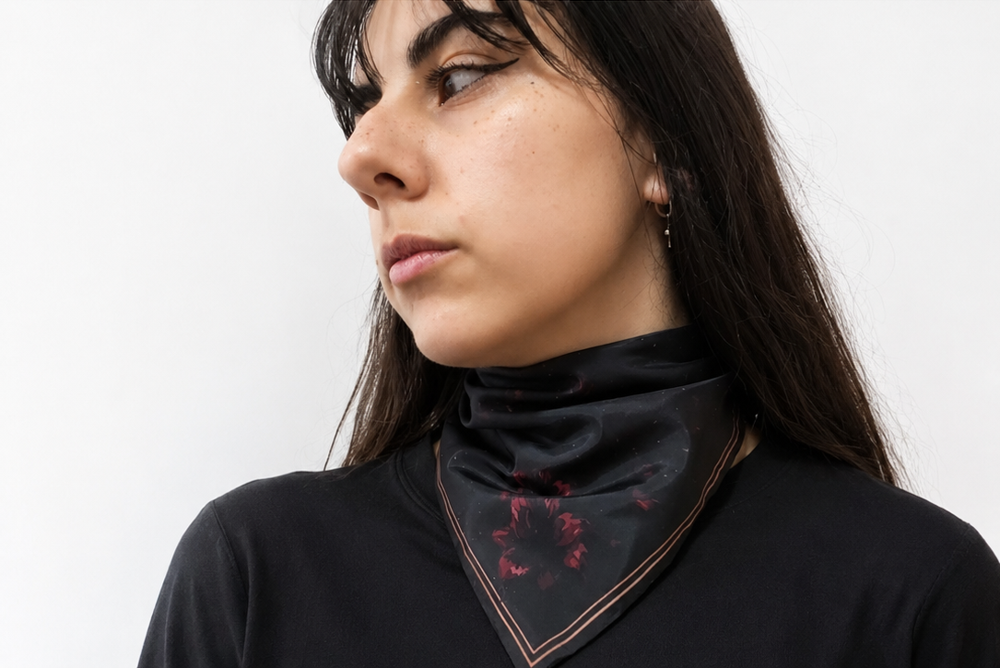
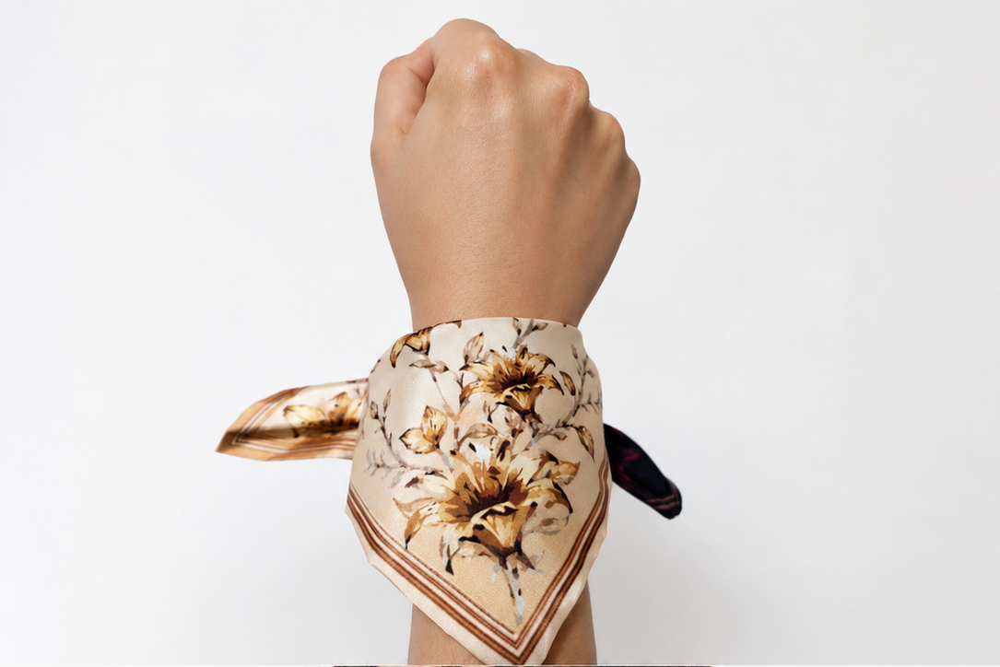
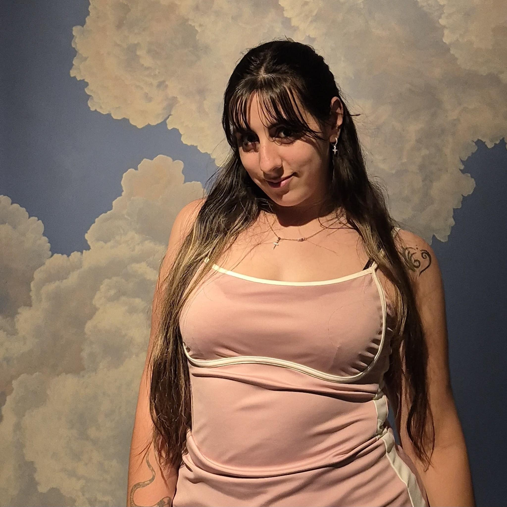

La propuesta del pañuelo
El diseño nace de la representación simbólica de la mujer a través del lirio. La flor condensa delicadeza, fortaleza y capacidad de renacer: puede atravesar momentos difíciles y aun así conservar su belleza, transformarse y florecer nuevamente.
Desde esa metáfora, el pañuelo propone una lectura sensible de los procesos de dolor, resistencia y reconstrucción.
Dos mundos que conviven
La composición se divide en dos mundos: una parte oscura y una parte clara. La zona oscura representa la violencia, el dolor y aquellas situaciones que intentan apagar la identidad, la libertad y la esencia de la mujer.
Allí los lirios aparecen marchitos o rodeados de sombras, mostrando cómo la violencia puede afectar y ocultar aquello que naturalmente busca crecer y expresarse.
Transición, ciclo y transformación
La oscuridad no aparece como un final, sino como una etapa dentro de un ciclo. La parte clara simboliza la luz, la libertad y la posibilidad de volver a florecer, con lirios vivos, abiertos y rodeados de elementos de crecimiento.
El paso entre ambos lados habla de transición y movimiento: la vida no está hecha solo de luz u oscuridad, sino de un ciclo donde ambas partes se relacionan. La sombra permite valorar la luz, y la luz permite encontrar esperanza dentro de la sombra.
Una experiencia colectiva
El pañuelo no representa solo una historia individual, sino también una experiencia colectiva. Cada flor forma parte de una composición mayor y muestra que las mujeres atraviesan estos procesos acompañadas por otras voces, historias y presencias que forman una red de apoyo.
Galería del pañuelo




Propuesta realizada por Florencia Strutzenberger en el marco de Taller de Diseño III, orientación Textil, junto con el LAD (Laboratorio de Diseño).